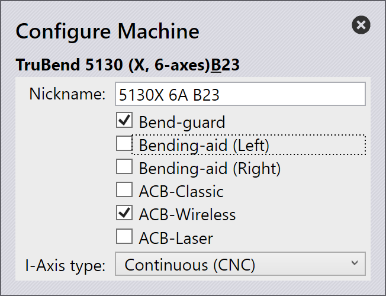
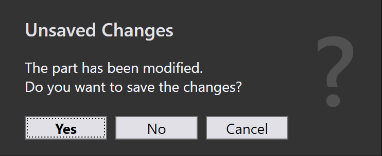
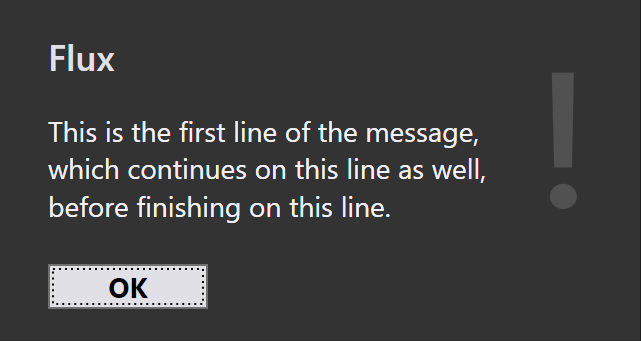
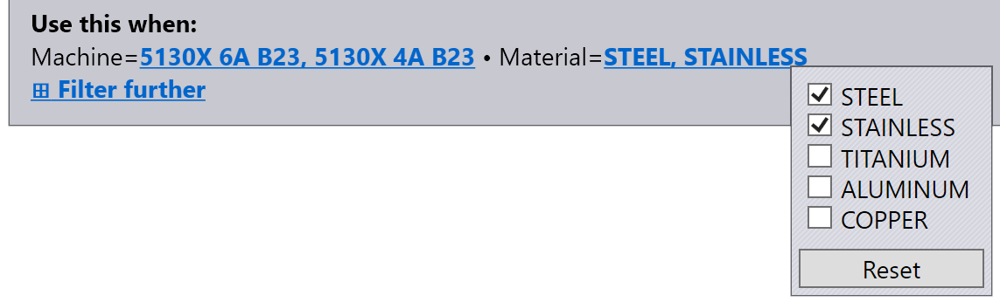

2012BoostInterface
product: flux org: metamation tags: [metamation, knowledge-base, flux, notes, legacy, tech] type: note project: Flux source: Notes/Tech/2012.BoostInterface.ftx updated: 2026-07-13
2012 ◉ Flux-Boost interface
[!info]- Revision history
Rev Date Author Note V1 2016-12-19 AV V2 2017-02-20 AV Interface changes for version 190 V3 2017-03-06 AV Interface changes for version 192 - Added BendCalculationMode, GeometryAdapt, UILanguage, UIUnit, SetupPlanLanguage, SetupPlanUnit for AutoCompute and Interactive modes V4 2017-03-31 AV Build 199 - Added ListAllMachines, ConfigureMachine, GetMachineConfig, SetMachineConfig, DeleteMachine V4 2017-05-01 AV Build 203 - InterfaceVersion bumped up to 3. ListAllMachines returns additional info, AutoCompute takes material definition as input V5 2017-05-08 AV Build 205 - InterfaceVersion = 4. Added GetFluxConfig, SetFluxConfig V6 2017-06-06 AV Build 202 - InterfaceVersion = 6. Can now use integer ID for workplace, added PartSavedAndClosed response V7 2017-06-21 AV Build 214 - InterfaceVersion = 7. Added BendMaterial (bend-alias for material), removed WorkPlaceID for ListToolLists V8 2017-06-21 AV Build 218 - InterfaceVersion 8. Added an OUT file that contains the bend-line adjustments done by Flux V9 2017-08-05 AV Build 223 - InterfaceVersion 9. Added TARGET parameter to GetFluxConfig/SetFluxConfig V10 2017-08-09 AV Build 224 - InterfaceVersion 10. Added Coining, CanAttachFlatteningBar to bend tools output V11 2017-09-21 AV Build 232 - InterfaceVersion 11. Added UnfoldedPartChanged flag (in response AutoCompute or Interactive) V12 2018-02-17 AV Build 254 - InterfaceVersion 12. Added ImportToolARV, DisplayMessage, SetMaterials command V13 2018-06-08 AV Build 267 - InterfaceVersion 13. Added DataManagement command V15 2018-08-11 AV Build 280 - InterfaceVersion 15. Added DINComputation flag (in response for AutoCompute or Interactive) V16 2018-08-25 AV Build 283 - InterfaceVersion 16. Added the ChangeMachine command V17 2018-09-09 AV Build 285 - InterfaceVersion 17. Added DescribeAllToolLists command V18 2018-10-18 AV Build 288 - InterfaceVersion 18. Added APPSETTING option for Geometry Adaptation strategy V19 2018-12-24 AV Build 296 - InterfaceVersion 19. Added NCReleasePath parameter to AutoCompute V20 2019-03-02 AV Build 302 - InterfaceVersion 19. Added TBSAngle setting to bend-dies (ListAllTools) V21 2109-04-28 AV Build 310 - Added BNCwithOverbending flag V22 2019-05-09 AV Build 310 - InterfaceVersion 20. Added TSOInteractive command V23 2019-06-09 AV Build 326 - InterfaceVersion 21. Added FoldTools page to DataManagement command V23 2019-06-09 AV Build 327 - InterfaceVersion 22. Added GripperDB page to DataManagement command V24 2019-12-14 AV Build 337 - Added NCMaterialName setting to AutoCompute (InterfaceVersion 24) V25 2019-12-13 AV Build 338 - Added TSOBatch command V26 2020-03-12 VL Build 347 - InterfaceVersion 26. Added ImportVacuumGripper command V27 2021-05-29 AV Build 414 - InterfaceVersoin 27. Added ApplyJupiduCorrections command
This tech-note explains the interface between Flux and Boost. The integration is largely done using command files and response files. A command file is used to send commands from Boost to Flux, and a response file is created by Flux when it has finished processing the command.
Boost1 will create a command file as a text file using the .fxcmd extension, and will just invoke Flux using a command line to process the command file
Flux.exe c:\etc\job1234.fxcmd
If this is an interactive command, Flux will open a visible window and will process the command. This instance of Flux can be called the interactive Flux (the Flux with UI visible). Additional interactive commands will be forwarded to the same instance, and will open there as additional tabs. If a non-interactive command is invoked, a Flux engine will be used to process this, without interfering with the interactive Flux that is running. It is possible for one interactive Flux (with any number of open parts) and any number of Flux Engines to be running at the same time2.
Thus, the Flux.exe process you start may be short-lived, it may simply forward all arguments to an already running Flux instance and immediately terminate. This means that when you start a Flux.exe process, you cannot use that process-ID for any reliably monitoring or detection3.
When Flux has finished processing a command, it will create a response file. By convention, the response file will be created in the same folder as the command file, and will always have a name like 12345.fxresp, where the root filename is the Job Id (see documentation on command files below). Thus, the adapter can simply install a FileSystemWatcher and wait for such a response file to be created.
Command: ListWorkplaces
Machines on which processing is done are called workplaces in Boost. This command is used to ask Flux for the list of available workplaces. These workplaces are then used to submit parts for processing (using commands like AutoCompute).
Command files
The command file to list workplaces looks like this
[Header]
Type=FluxCommandFile ; mandatory - tags this as Flux command file
|
[Command]
Type=ListWorkplaces ; the actual command to execute
JobId=4121 ; mandatory job id
Let's use this command file as a template to understand the conventions for command files in general. Each command file contains a Header section and a Command section. The Header section merely identifies this as a Flux command file, and specifies an interface version (which Flux ignores for now, but we might find some use for it later).
the Command section lists the actual command to execute, and must always have the Type and JobId entries. Other commands may have many more parameters in this section as we will see later. The JobId is used later as the base filename for the -response_ file that Flux will generate. So, it is very important that the JobId should not contain any characters that cannot appear in a filename.
Boost should issue this command by just invoking Flux.exe and passing the full path of the .fxcmd file as the only parameter. This particular command (ListWorkplaces) is a synchronous command, and will be completed by the same Flux.exe process that is invoked by Boost. Thus, it is perfectly viable for Boost to just wait for this process to complete, and to then read the response file. (For such synchronous commands, it is not necessary to use a more complex mechanism like a FileSystemWatcher, and this document will clearly distinguish which commands are synchronous, and which ones are not).
Response files
Here is a typical response file for the ListWorkplaces command (the comments are just for elucidation, and will not be present in an actual response file).
[Header]
Type=FluxResponseFile ; every response file will have this
Completed=1 ; this is set to 1 if the command completed, 0 otherwise
|
[Response]
JobId=4121 ; this is the job id (also used as the filename for this file)
Command=ListWorkplaces ; the command this is a response to
WorkplaceCount=2 ; response details start from here
|
[Workplace 1]
Technology=Bend ; what type of machine is this?
ID=120001 ; the ID of the machine
Name=5130X 6A B23 ; the name Boost should use to refer to this workplace
NCName=TruBend 5130 (6-axis) B23 ; name used in NC code (Trumpf reference name)
NCPath=C:\Flux\Output\Bend ; NC-code location for this machine
|
[Workplace 2]
Technology=Fold
ID=135002
Name=5030 TBC/2
NCName=TruBend Center 5030 (V2)
NCPath=C:\Flux\Output\Fold
Let us use this response file to understand how they are structured. Each response file has a Header section that contains the mandatory Type entry. The Completed key is set to 1 if the command completed successfully, or to 0 if some problem was encountered (for example, Flux could not load an input file, or had some other error while processing, such as an invalid workplace name).
Following this, there is a Response section that echoes again the JobId and the original command that was issued. Then the actual command-specific response data continues. For this command, the total number of work-places is listed here, and then there is one INI section for each workplace.
For this command, Boost should ignore all workplaces where Technology is not set to Bend. The Name of the workplace is the most important identifier, and this is what should be used later when Boost submits parts for processing. The NCPath key is where the output files for the workplace should be copied to.
Note 1: Flux will not place the output files in this NCPath location. Flux will always place output files in the same folder where the command file resides, and it is then the job of Boost to move these to the NCPath location (presumably after the code has been released in Homezone).
Note 2: Boost is responsible for deleting the command file, as well as the response file, after the processing is complete.
Command: ListInterfaceVersion
Typically, this is the first command that Boost will use when starting a session with Flux. It is used to query Flux what the interface version is, and this version will be incremented each time there is any change to the Flux-Boost interface (either in the command files, or in the response files).
Since neither Flux nor Boost are designed to be backward compatible in the interface versions, this will provide an early exit point if the interface versions are not strictly matching.
[Header]
Type=FluxCommandFile
|
[Command]
Type=ListInterfaceVersion
JobId=1743
The response file lists the current Flux interface version. This is a global interface version that is common for all commands, and for both the command response files. If there is any update to the interface, this is bumped up.
[Header]
Type=FluxResponseFile
|
[Response]
Type=ListInterfaceVersion
JobId=1743
InterfaceVersion=22
Command: ListBendTools
This command is used to list all the bend tools in the catalog. This is not the subset of tools that the customer might have in inventory, but rather the complete set of standard tools installed at the customer's site. This also includes the custom tools installed at this customer.
[Header]
Type=FluxCommandFile
|
[Command]
Type=ListBendTools
JobId=1223
The response file for this will contain one entry for every installed bend tool. Here is a small section of a typical response file
[Header]
Type=FluxResponseFile
Completed=1
|
[Response]
JobId=8412
Command=ListBendTools
ToolCount=294
|
[Tool 1]
Name=Adapter Modufix MF/S H100
Catalog=Trumpf
Kind=PunchHolder
Height=100
Shape=Extender
|
[Tool 2]
Name=Adapter Modufix MF/S H150
Catalog=Trumpf
Kind=PunchHolder
Height=150
Shape=Extender
...
For every tool entry, the basic fields shown in the listing above are included. The Catalog key tells us which tool catalog this comes from (Trumpf, Wila, etc). One special tool catalog that may appear here is the Custom catalog, that contains all the custom tools this installation contains.
In addition to this basic information, the entries for punches and dies contain additional information as shown below
...
[Tool 229]
Name=OW210 R0.5/30 H139.8
Catalog=Trumpf
Kind=Punch
Height=139.8
Shape=Pointed
Radius=0.5
Angle=30
Coining=1
|
[Tool 230]
Name=EV002 W8/30 R1
Catalog=Trumpf
Kind=Die
Height=100
Shape=V
Radius=1
Angle=30
VWidth=8
CanAttachFlatteningBar=1
...
All the tools are collated into a single list. However, it is quite simple to group them into different categories as needed:
- You can use the Kind field to figure out if this is a punch, die, punch-holder or die-holder. In this context, punch-holder stands for holders, adapters and extenders.
- You can further use the Shape field to classify the tool further. For punches, this is one of: Straight, Gooseneck, Pointed, Z-Bend or Radius. For dies, this is one of: V, Z-Bend, Hem or Rollbend. (In this context, Hem refers to a hemming block like FWZ).
- For completeness, each entry may also be further annotated with a SplFlavor key, which is used internally in Flux to define some special tool types. Largely, this information may not be required, since mostly this information can be obtained from Kind and Shape. However, it is included for completeness, and can be documented further on demand.
- The VWidth that is returned is always the V-Width as measured at the base of the edge radius (the Trumpf-style V-Width).
- If the Coining value is present and is set to 1, then the tool can be used for coining.
- If the CanAttachFlatteningBar value is present and set to 1, the die has drilled-holes and a flattening block can be attached to it.
- For some dies, there is an additional entry called TBSAngle. If this is specified, then this angle (rather than the usual Angle value should be used when passing the die to a TBS computation)
Command: ListToolLists
Computing a bend solution requires a workplace and a tool list to provide the context for the solution. The set of possible workplaces can be enumerated by using the ListWorkplaces command documented above. The set of available tool lists can be enumerated by using this command
[Header]
Type=FluxCommandFile
|
[Command]
Type=ListToolLists
JobId=8411
In reponse, Flux produces an output file like this
[Header]
Type=FluxResponseFile
Completed=1
|
[Response]
Type=ListToolLists
JobId=8411
ToolListCount=5
|
[ToolList 1]
Name=<Inventory>
Guid=990aa665-cacd-45ba-a86c-d6cc97e4d95e
|
[ToolList 2]
Name=<Catalog>
Guid=de16d2d8-54dc-4ccf-a4b2-5a99e3fb38ed
|
[ToolList 3]
Name=<Default>
Guid=68409e4d-b3dd-41f9-a602-2e0c40512a75
|
[ToolList 4]
Name=Thin Aluminum
Guid=39d5a9c1-e580-4e76-8c0b-e12d093f430e
|
[ToolList 5]
Name=7036 Special
Guid=cd0942ad-f956-4c78-bb02-d4afb0c8009c
In addition to any custom tool lists that the user has configured, there are 3 special tool lists that will always appear in this list:
- The
tool list is the standard set of tools that have been designated for use with a particular machine. The user typically configures these using the interactive tool-list editor in Flux and then saving that list as the 'default tools' for a specific machine. - The
tool list is the set of all tools the customer has non-zero inventory quantities of. The Default tool list above is a subset of this set of Inventory tools, and this will include tools that are not specificied as standard for this machine (as long as they can actually be mounted and used). - The
tool list is a large list of all possible bending tools that Flux knows about. This includes not just Trumpf tools, but also other third party tools that are installed. This tool list serves as a useful way to get a speculative tooling solution of whether a part would be possible to produce, in principle, by ordering some additional tools.
Command: DescribeToolList
The DescribeToolList command is used to get the details of a tool-list that is
enumrated by the GetToolLists command. The details include the set of tools in the list,
along with their priorities. This command returns only the tool names; for further
details about these tools, one can use the GetBendTools commands to describe the tools.
The DescribeToolList command requires both a tool-list name, and also the work-place name
for which processing is being done. The workplace name is required since some of the
tool-list names such as (
[Header]
Type=FluxCommandFile
|
[Command]
Type=DescribeToolList
JobId=5911
Workplace=5130X 6A B23 ; the workplace nickname, or the integer Id
ToolList=Goosenecks 2
The response file contains the names of the tools in this list, along with their priorities. Here is an example
[Header]
Type=FluxResponseFile
Completed=1
|
[Response]
JobId=1384
Command=DescribeToolList
Workplace=5130X 6A B23
ToolList=Goosenecks 2
Machines=120300,120511
Materials=1.0038,1.4301
Thickness=0.5,2.5
ToolCount=11
Guid=39d5a9c1-e580-4e76-8c0b-e12d093f430e
|
[Tool 1]
Name=OW200/K R0.5/86 H119.8
Priority=2
|
[Tool 2]
Name=EV004 W12/30 R1
Priority=3
...
The Priority for each tool is a value from 1 to 5, with 1 being the most preferred tool and 5 the least preferred.
The Machines, Materials and Thickness keys may or may not appear. If they do, these specify additional filter conditions under which this tool list is to be used by Flux. The Machines key contains a comma separated list of workplace IDs. If this is missing, the tool list is applicable for all machines. Likewise, the Materials key contains a list of material names, and the Thickness key contains two numbers delimiting the thickness limits (in mm) for which this tool-list can be used.
Note that when Boost passes a tool list name to the AutoCompute command, Flux does no filtering or additional validation, and blindly uses the tools from that tool list. In other words, the filter conditions listed above are not enforced when Flux is running in Boost mode4.
Command: DescribeAllToolLists
The DescribeAllToolLists command is used to get the details of all the user-defined tool lists in one shot. The output of this is very similar to the output from the DescribeToolList command, but since there are multiple tool lists, there are a few differences. First, there is one section with a name like ToolList 1 for each of the tool lists
[ToolList 1]
Name=Goosenecks 2
Guid=a2dcac2b-f209-4c20-b5ae-a8c079c6cb95
Machines=13
ToolCount=11
Materials=St37,AlMg3
Then, each tool entry within this tool list has a section like Tool 1.1, Tool 1.2 etc. The tools for the second tool list will then have names like Tool 2.1, Tool 2.2 etc
[Tool 2.1]
Name=OW203/K R2.5/60 H119.8
Priority=2
|
[Tool 2.2]
Name=OW203/K R2/60 H119.8
Priority=2
This command is mainly for improving performance - it can replace a number of DescribeToolList calls with a single call.
Command: ListAllMachines
This command is used to list all the machines that are available in a Flux installation. Note that this is quite different from the list of installed workplaces; that list might contain only a few machines, but the all machines list will contain most Trumpf press-brakes that are in production. This output from this command can be used as a basis for implementing a workplace configuration mode inside Boost.
[Header]
Type=FluxCommandFile
|
[Command]
Type=ListAllMachines
JobId=1511
The response file lists the internal IDs, the official Trumpf names of the machines and the nicknames that are used in Flux UI. In addition, there is some basic information about the machine such as the open and closed heights, table lengths etc, as can be see in the following list
[Header]
Type=FluxResponseFile
|
[Response]
JobId=1511
Type=ListAllMachines
MachineCount=163
|
[Machine 1]
ID=120300
Name=TruBend 1066 (2-axes, One) B22
Nickname=1066 2A One B22
PunchValency=PTrumpf
DieValency=DTrumpf
TableLength=2042
OpenHeight=350
ClosedHeight=150
Tonnage=660
ACBClassic=False
ACBLaser=False
ACBWireless=False
ControlType=Delem
BGSystem=T2Axis
|
[Machine 2]
ID=120301
Name=TruBend 1066 (2-axes,Traditional_Manuell) B22
Nickname=1066 2A TM B22
...
Command: ConfigureMachine
This command is used to ask Flux to configure a machine. Each machine has some options (for example, an option might be whether the machine has a bending-aid; another might be whether it has as pneumatic or CNC-controlled I-Axis). In response to this command, Flux displays a simple User-interaction panel where the user can configure the machine. The exact settings that appear in this panel depend on the machine being configured. Here is an input command file for this; the MachineId parameter specifies the machine to be configured.
[Header]
Type=FluxCommandFile
|
[Command]
Type=ConfigureMachine
JobId=7212
MachineId=120067
Note: If the specified machine is not installed, Flux will install it automtically when this command is executed. Thus, this command can be treated as a short-cut for install and configure. (If the machine is already installed, it is merely configured).
The UI that Flux displays for this command looks like this:

Recommended workflow for managing machines
Using the commands listed in this document, here is the workflow we would recommend for Homezone to use, while managing machines/workplaces.
- Use the ListAllMachines command to get a complete list of all the available Flux machines, along with their official Trumpf names and Flux IDs.
- Now, HomeZone can present some UI for the user to select one of these available machines. Once the user does that, it can be used as a basis for a ConfigureMachine command, which invokes a Flux panel to allow the user to configure them machine options. Let us say this happens in a particualar Flux client A.
- Then, the GetMachineConfig can be applied to this Flux client A, and HomeZone can obtain the options.ini and settings.curl files for this machine (if they exist).
- Then, HomeZone can pass this configuration to all other Flux instances B, C, D etc using the SetMachineConfig command. This will both install the machine on these instances, and will also configure it using the same options that the user selected in Flux client A.
Command: GetMachineConfig
Once a machine is configured (using the ConfigureMachine) command, that configuration will need to be redistributed to other Flux clients. A complete machine definition in Flux consists of these files:
- options.ini: This file configures the variable options that the user may purchase with the machine. For example, the type of safety system, the availability of angle measurement or the type of I-Axis drive are options. Typically, these are set once and are rarely changed.
- settings.curl: These are machine settings that the user might configure at any point. For example, these will include settings like the axis movement speeds, the preferred gauging strategy etc.
- cellconfig.curl: The cell configuration for BendMaster machines (contains the robot position, the track length, fixed components in the cell)
At a minimum, all these files may be missing, in which Flux will work with the default settings for the machine. This command can be used to fetch the settings.curl and options.ini for a particular machine. The command file looks like this
[Header]
Type=FluxCommandFile
|
[Command]
Type=GetMachineConfig
JobId=7213
MachineId=120067
And the response file would look like this
[Header]
Type=FluxResponseFile
Completed=1
|
[Response]
JobId=7213
Command=GetMachineConfig
Settings=
Options=X:\TDATA\io\boost\options.ini
CellConfig=
In this particular example, the settings.curl file does not exist for this machine, and so the Settings key is empty; only the options.ini file exists. Flux will copy the configuration files into the same folder where the fxcmd file exists.
Command: SetMachineConfig
Once a machine configuration has been obtained using GetMachineConfig, that configuration can be distributed to other Flux clients using the SetMachineConfig command. The machine configuration, as explained above, consists of the settings.curl file and the options.ini file (one or both of these files may be missing, in case of a default configuration).
To set a machine configuration to a new machine, use a command file like this
[Header]
Type=FluxCommandFile
|
[Command]
Type=SetMachineConfig
JobId=7214
MachineId=120067
NickName=MyWorkplace
Settings=X:\TData\io\boost\settings.curl
Options=X:\TDATA\io\boost\options.ini
CellConfig=
In this case, we are applying both the settings.curl and the options.ini files to the machine configuration. Sometimes one or more of these files might be missing (using defaults), so just set that key to an empty string, or leave it out altogether. The NickName key is used to set a new nick-name for this machine (for example, to make it match the work-place name from Boost)5.
Note: If the specified machine is not currently installed in Flux, this command will first install the machine, and will then apply the settings to it. So, this can be used as a very simple method to install a machine with default settings and options, by just leaving out the Settings and Options keys.
Command: DeleteMachine
This command is used to delete a machine completely. It can be used when the user deletes a workplace in Boost. In general, this is not very critical to do, since installed machines take up a very small amount of space (~ 50Kb). To delete a machine, use a command file like this
[Header]
Type=FluxCommandFile
|
[Command]
Type=DeleteMachine
JobId=7215
MachineId=120067
Command: GetFluxConfig
This command, along with SetFluxConfig, is used to synchronize Flux configuration and settings between Flux instances. Boost should ask one of the Flux instances to fetch the Flux-configuration, which is just a set of files, each with a revision number. Then, it should push that configuration to other instances6.
A GetFluxConfig command file looks like this
[Header]
Type=FluxCommandFile
|
[Command]
Type=GetFluxConfig
JobId=7841
The response file lists a set of configuration files, each with a revision number. In addition, it also lists a set of files that have been deleted at this Flux instance. For each of these entries, the Name specifies the full-filename with the path (which the adapter will use to copy the file) and the Target, which is a relative name that can be used as a database key. This will just the name of the file relative to the Flux installation's data directory.
[Header]
Type=FluxResponseFile
Completed=1
|
[Response]
JobId=7841
Command=GetFluxConfig
FileCount=3
DeleteCount=2
|
[File 1]
Name=X:/Data/System/settings.curl
Target=System/settings.curl
Revision=18166337
Type=SystemSettings
|
[File 2]
Name=X:/Data/Machine/13/settings.curl
Target=Machine/13/settings.curl
Revision=16910548
Type=MachineSettings
|
[File 3]
Name=X:/Data/Machine/13/options.ini
Target=Machine/13/options.ini
Revision=16910548
Type=MachineSettings
|
[Delete 1]
Name=X:/Data/Machine/14/settings.curl
Target=Machine/14/settings.curl
Type=MachineSettings
|
[Delete 2]
Name=X:/Data/Machine/14/options.ini
Target=Machine/14/options.ini
Type=MachineSettings
We imagine that Boost will be maintaining a central repository of Flux configuration files, along with their revision numbers. After a GetFluxConfig command, it scans the response file and copies over the files that are not yet in the central repository. Then, it should broadcast these changes to the other Flux clients, using the following procedure:
- Copy all the shared files to a local folder on the Flux client
- Issue a SetFluxConfig command to get that client in sync with the central repository
These are the known limitations:
- If two clients edit the same configuration file at the same time (for example, two users edit a machine's configuration), there is no way to merge the changes. One of the two edits will be lost. There is no plan to fix this limitation, and users have to take care that this does not happen.
Praxis customizations
Along with quering the configuration files, the installed machines and bend catalogs can be queried by setting GetInstalledItems=1 in the command section. In response to this, Flux returns comma-separated list of installed machine and catalog IDs in the Response section. The returned list is pre-sorted in the ascending order for easier diffing.
GetFluxConfig command with the installed items query
[Header]
Type=FluxCommandFile
|
[Command]
Type=GetFluxConfig
GetInstalledItems=1
JobId=7841
Command response
[Header]
Type=FluxResponseFile
Completed=1
|
[Response]
JobId=7841
Command=GetFluxConfig
FileCount=1
DeleteCount=0
InstalledMachines=8,15,16
InstalledBendToolCatalogs=1,6,9
|
[File 1]
Name=X:/Data/System/settings.curl
Target=System/settings.curl
Revision=18166337
Command: SetFluxConfig
This command is the complement to GetFluxConfig, and is used by Boost to push the configuration changes to other Flux clients. Here is an example of a SetFluxConfig command file
[Header]
Type=FluxCommandFile
|
[Command]
Type=SetFluxConfig
JobId=2022
FileCount=3
DeleteCount=2
|
[File 1]
Source=C:/Etc/File1
Target=System/settings.curl
Revision=18166337
|
[File 2]
Source=C:/Etc/File2
Target=Machine/13/settings.curl
Revision=18162571
|
[File 3]
Source=C:/Etc/File3
Target=Machine/13/options.ini
Revision=18161848
|
[Delete 1]
Target=Machine/14/settings.curl
|
[Delete 2]
Target=Machine/14/options.ini
Boost should copy the modified configuration files to a location that is accessible by Flux (like C:/Etc/File1). Then, the Flux client will copy the files form this location to the target location (Machine/13 etc). Note that the Target values specified in the SetFluxConfig command must all be the relative target values that Flux originally passed in, and not absolute file names. This will handle correctly the case where Flux is installed on different folders on different computers. The local Flux client will map this filename (like System/settings.curl) to an appropriate local data folder (perhaps like C:/Flux/Data/System/settings.curl). And, the local Flux client will also delete the local copies of files that were deleted on other Flux clients7.
Praxis customizations
Praxis issues installed items update (machines and bend catalogs) by setting command key UpdateInstalledItems=1. The respecive items list is passed by settings InstalledMachines and InstalledBendToolCatalogs keys under the command section. Flux updated the installation in response to this request.
SetFluxConfig command with the installed items update request
[Header]
Type=FluxCommandFile
|
[Command]
Type=SetFluxConfig
JobId=2421
UpdateInstalledItems=1
InstalledMachines=8,12,15
InstalledBendToolCatalogs=1
Command: AutoCompute
The AutoCompute command is used to request Flux to compute a solution without any visible UI. Flux runs in engine mode, computes a bend solution, saves the outputs (NC code, setup sheets), and finally generates a response file. Here is a typical input command file for an AutoCompute job
[Header]
Type=FluxCommandFile
|
[Command]
Type=AutoCompute
JobId=5832 ; mandatory job Id
Workplace=5130X 6A B23 ; one of the workplaces nicknames, or IDs
BendDeductionCalculation=FEM ; the bend-deduction calculation mode (see below)
GeometryAdapt=Keep2D ; the geometry adaptation strategy (see below)
ToolList=<Default> ; one of the tool-lists obtained from ListToolLists
UILanguage=EN ; language used for error/warning messages
UIUnit=Metric ; unit used for error/warning messages
SetupPlanLanguage=EN ; language used to generate the setup sheets
SetupPlanUnit=Metric ; unit used in the setup sheets
GeometryFile=c:\Etc\Part1.geo ; input 2D or 3D geometry file
MeshesFile=c:\Etc\Part1.mesh.zip ; (Optional) formed-region meshes to attach to model
Material=SS400 ; the name of the material to use
TensileStrength=510 ; material's tensile strength (in MPa)
Density=7.85 ; specific-gravity of the material
BendMaterial=St37 ; (Optional) the 'bend alias' for the material
NCReleasePath=S:\Code\1\Part1.bnc ; Location where the NC code is 'released'
NCMaterialName=Tempered ; (Optional) if set, this is output as the material in NC code
When an AutoCompute job is submitted, here are the steps that Flux takes (assuming the input is a 2D part, typically a GEO or DXF file):
- Fold Up the 2D part into a 3D part by using the bend information specified in the bend-lines of the part.
- Create bend technology data using the specified workplace.
- Compute a bending sequence
- Compute one or more setups, each comprising of multiple tool stations, with which the part can be processed (this step and previous step are done together; the sequence affects the setups, and the setups affect the sequence).
- If a satisfactory solution could be computed with no errors (no collisions, no bends that could not be processed, no bends that could not be gauged etc), then NC code and a setup sheet are generated and saved in the same folder that the command file is loaded from.
- The tooled-up part is saved as a native Flux part (*.fx file) in the same folder that the command file is loaded from. This happens even if there are some tooling errors.
If the input file is a 3D part (for example, an IGES, STEP or SolidWorks file), the first step is different - Flux computes a 3D sheet-metal model from the surface model by using a feature recognizer to group the surfaces into planes and bends. The rest of the processing is similar.
The MeshesFile is an optional input. If this is specified, it should point to a ZIP file that contains a set of STL models. These models are in the same flat coordinate system of an unfolded model, and each STL file should contain the set of formings for one plane. These formings are then bound to the plane and are used in simulations and collision checks.
The Workplace setting can provide a workplace nickname, or simply a workplace Id (integer). Both are obtained from the ListAllWorkplaces command.
The BendDeductionCalculation setting is used to select one of the bend-deduction computation modes. The possible values are LEGACY, FEM, or DEFAULT. You can also leave this setting out completely, in which case it will revert to DEFAULT. These are different computational algorithms by which the bend deductions, K-factors, bend-radii and spring-back are computed. LEGACY is the old computation method (that matches the results from TruTops or from Boost). FEM is the newly implemented computation method supported by the TAT-developed TBS library. We suggest using DEFAULT, which allows Flux to manage this choice using UI that it provides the users for this purpose.
The GeometryAdapt setting is used to select one of the Geometry Adaptation strategies. If the design geometry does not match the production geometry, Flux adapts the geometry. This setting has the possible values of KEEP2D, KEEP3D, NOCHANGE, or APPSETTING. The first three of these correspond to the three different geometry adaptation strategies implemented in Flux (see Flux documentation on Geometry Adaptation for more information on these). The fourth setting (APPSETTING) tells Flux to just use the current default that the user has configured in the Application Settings (or has overridden in the Machine Defaults).
The Material, Density and TensileStrength settings are used to define any custom materials. If these settings are missing, Flux picks up the material from the input file (such as GEO). The density is used only for part weight computations, and is not critical. However, the TensileStrength is used as the input for the bend-deduction computation (using the TBS.DLL), and it should be correctly specified. The material name and the tensile strength specified are passed unchanged to the TBS.DLL and the resulting values are used8.
The BendMaterial setting is used to provide a bend material alias for the input material. This is typically used when the Material refers to a custom material, which should then be mapped to one of the standard materials for computing the bend allowances, forces and springback. The Material is used in the setup sheets, while the BendMaterial is used to compute the bend allowances (it should be one of the materials that the TBS.dll knows about, for example).
The NCReleasePath is used to tell Flux where Boost is going to place the NC code after Flux generates it (for release). This is used to output the correct release path and filename in the setup sheet.
As with all commands, Flux generates a response file when it has finished processing the AutoCompute part. There are three possible outcomes:
A. Processing cannot be completed
In some cases, the processing cannot even be completed - for example, the input file specified could not be loaded, or the specified workplace or tool-list could not be found. In this case, the Completed entry in the response file is set to 0, and the error sections indicate what has gone wrong. Here is such a response file
[Header]
Type=FluxResponseFile
Completed=0
ErrorCount=1
WarningCount=0
|
[Error 1]
ID=File hilang: {0}
EN=File missing: {0}
DE=Datei fehlt: {0}
CS=Soubor chyb�: {0}
... other languages ...
TR=Dosya eksik: {0}
Args=1
Arg1=c:\Etc\PartX.geo
B. Processing completed, with errors
Sometimes, the processing can be completed, but there me be one or more errors in the bend solution - for example, there is a collision with a punch, or there is a bend for which gauge positions could not be assigned. In this case, Completed will be set to 1, but ErrorCount will be set to non-zero
[Header]
Type=FluxResponseFile
Completed=1
OutputCount=3
UnfoldedPartChanged=1
DINComputation=0
ErrorCount=2
WarningCount=0
|
[Output 1]
Type=NCCode
File=c:\boost\Part2.bnc
|
[Output 2]
Type=SetupSheet
File=c:\boost\Part2.html
|
[Output 3]
Type=PartWithTech
File=c:\boost\Part2.fx
|
[Error 1]
ID=12
EN=Bend {0}: punch missing
... other langauges ...
Args=1
Arg1=3
|
[Error 2]
ID=16
EN=Bend {0}: die missing
... other langauges ...
Args=1
Arg1=3
C. Processing completed, with no errors
The processing could be completed, with no errors. In this case, the code is ready to be published (though there may still be some warnings, as indicated by a non-zero WarningCount value). Here is an example of an error-free response file
[Header]
Type=FluxResponseFile
Completed=1
OutputCount=4
UnfoldedPartChanged=0
DINComputation=0
ErrorCount=0
WarningCount=0
|
[Output 1]
Type=NCCode
File=c:\boost\Part1.bnc
|
[Output 2]
Type=SetupSheet
File=c:\boost\Part1.html
|
[Output 3]
Type=PartWithTech
File=c:\boost\Part1.fx
|
[Output 4]
Type=BendAdaptation
File=c:\boost\Part1.out
Here is a note about the output files: The BNC, HTML and FX files are self-explanatory. The DINComputation flag is set to 0 or 1, and indicates whether the TBS library had to fall back to the DIN formula for computing one or more of the bend deductions. The UnfoldedPartChanged flag is set to 0 or 1, and indicates whether Flux had to adjust any of the bend radii or bend deductions. In general, The OUT file is a bend-adjustments file, that records the changes in radius and/or K-Factor that Flux has to do to make the geometry adapt to the final process conditions. The OUT file simply specifies the final radius and k-factor for each bend, in a format like this
[Header]
Count=10
|
[Bend 1]
Moniker=<SnippetV1 sctype="SpaceClaim.BasicMoniker`1[[SpaceClaim.IEvaluation, Core]], Core" refId="1b8dabbe-61ea-4a13-a994-fda22f6b486f:43074" />
Radius=2.6
KFactor=0.394053
Punch=OW200/S R1/86 H220
PunchCategory=OWR1.0
Die=EV005/H W16/30 R1.6
DieCategory=EVG16W30
|
[Bend 2]
Moniker=<SnippetV1 sctype="SpaceClaim.BasicMoniker`1[[SpaceClaim.IEvaluation, Core]], Core" refId="1b8dabbe-61ea-4a13-a994-fda22f6b486f:38931" />
Radius=2.6
...
Suppressing all Outputs
There is a special key that you can add to the [Command] section of the AutoCompute command, and if this following key is present, all the bend outputs generated by this command are suppressed (these include the BNC file, the HTML setup plan, the OUT file with the bend modifications etc). This is not very useful for Boost, but it can be used as a way to do automated testing - in this mode, Flux can be used to evaluate whether a part can be tooled up without any errors or warnings. To use this special mode, add the following line
...
[Command]
...
NoOutputs=1
...
Advanced functions
If you set BNCwithOverbending=1 in the command section, then the BNC files are generated with the part in the over-bent state (before spring-back). This is useful for some special projects that want to use these BNC models for collision checking.
If you set ForceGenerateBNC=1 in the command section, then the BNC files are generated even if there are any errors. Use this carefully, it may sometimes cause problems if there are certain types of tooling errors (like a missing die may cause a crash). This is not meant for production use, it is meant only for internal test use.
Command: ProcessStatus
Boost may issue commands to Flux to initiate part processing in auto-compute modes, or in the interactive mode. The ProcessStatus command allows Boost to find out which of these jobs are still running. The command file looks like this
[Header]
Type=FluxCommandFile
|
[Command]
Type=ProcessStatus
JobId=15 ; mandatory job Id
Each auto-compute job will run as a separate process, while all the interactive jobs will run in one process (distinct from any of the auto-compute processes). The output from the ProcessStatus command lists all these jobs, along with the processes IDs of the corresponding processes
[Header]
Type=FluxResponseFile
Completed=1
ProcessCount=4
|
[Process 1]
PID=2600
JobID=5832
Interactive=0
|
[Process 2]
PID=2833
JobID=5833
Interactive=0
|
[Process 3]
PID=2991
JobID=5743
Interactive=1
|
[Process 4]
PID=2991
JobID=5755
Interactive=1
Note that the process-ID for the interactive jobs are all the same, while each auto-compute job (Interactive=0) has a dedicated process for it.
Command: Interactive
This command opens a part for interactive editing. The part should already have been tooled up using the AutoCompute command earlier. Since this accepts only fully tooled-up parts, the only type of part that is acceptable here is a Flux Native file (*.fx).
Here is a command file used to open a part for interactive editing
[Header]
Type=FluxCommandFile
|
[Command]
Type=Interactive
JobId=35 ; mandatory job Id
PartFile=c:\Etc\Part1.fx ; the part to open (must be an FX file)
UILanguage=EN ; language used for the UI, and for error/warning messages
UIUnit=Metric ; unit used for the UI, and for error/warning messages
SetupPlanLanguage=EN ; language used to generate the setup sheets
SetupPlanUnit=Metric ; unit used in the setup sheets
NCReleasePath=S:\Code\1\Part1.bnc ; NC code release path and filename
As soon as a part is opened, Flux immediately generates a response file indicating that the part is now opened and is being edited (note the Action=PartOpened in the Response section).
[Header]
Type=FluxResponseFile
Completed=1
|
[Response]
JobId=35
Command=Interactive
Action=PartOpened
During the interactive editing session, the user may make some changes and may save the part (using the File/Save menu). At this point, Flux will save the part, the NC code and the setup sheet, and will publish a fresh response file indicating that the part has been saved.
[Header]
Type=FluxResponseFile
Completed=1
OutputCount=3
UnfoldedPartChanged=0
DINComputation=0
ErrorCount=0
WarningCount=0
|
[Response]
JobId=35
Command=Interactive
Action=PartSaved
|
[Output 1]
Type=NCCode
File=c:\boost\Part1.bnc
|
[Output 2]
Type=SetupSheet
File=c:\boost\Part1.html
|
[Output 3]
Type=PartWithTech
File=c:\boost\Part1.fx
Structurally, this is very similar to the response file that is created as a result of an AutoCompute. It contains the same list of Outputs, Errors and Warnings. The Action=PartSaved in the Response section tells Boost that the user has manually saved the part9.
Finally, the part is closed by the user, and Flux signals that by generating a PartClosed response
[Header]
Type=FluxResponseFile
|
[Response]
JobId=35
Command=Interactive
Action=PartClosed
So, the series of response files generated for an interactive editing session is always like this:
- One PartOpened response at the start
- Zero or more PartSaved responses, one issued each time the user saves the part
- One PartClosed response at the end
It is also possible that the user edits a part, and then tries to close it. At this point, Flux will ask the user if they want to save changes. If they do, the part is saved and closed in one operation. Then, the PartSavedAndClosed response is generated. In this case, the life-cycle of this part will be:
- One PartOpened response at the start
- Zero or more PartSaved responses, one issued each time the user saves the part with a File/Save operation
- One PartSavedAndClosed response at the end
Note that multiple parts can be opened for interactive editing at the same time; each one is opened in a separate tab in Flux. The user may switch between these parts, and may interact with them in any sequence. In particular, it is possible for the sequence of Open-Save-Save-Save-Close responses of multiple parts to all interleave with one another in any order.
Command: CloseInteractive
This command is used to close an interactive session that has been opened by an earlier Interactive command. The session is closed unilaterally, with the user having no choice to abort the close. Any changes that are unsaved are lost. The command file looks like this
[Header]
Type=FluxCommandFile
|
[Command]
Type=CloseInteractive
Force=1 ; 0=ask user whether to save or not, 1=force close wiethout asking
JobId=15 ; mandatory job Id
JobToClose=13 ; the job-id that was used for the earlier Interactive command
Note that the CloseInteractive command will have its own JobId, but must specify the part to close using the original JobId that was used for the Interactive command. The response file looks like this
[Header]
Type=FluxResponseFile
Completed=1
|
[Response]
JobId=15
UserCancelled=0
Command=CloseInteractive
The UserCancelled flag is set to 1 in the special case where the user did not accept closing Flux - in other words, if the user clicked the Cancel button in the following dialog that is displayed when there are unsaved changes.(Note that this dialog is never displayed if the Force flag is set; in that case, Flux closes the part without even asking the user, even if there are any unsaved changes).

As a special case, this command will accept a JobToClose value of * (asterisk) to mean close all parts. The command file for that will look like this
[Header]
Type=FluxCommandFile
|
[Command]
Type=CloseInteractive
Force=1 ; 0=ask user whether to save or not, 1=force close without asking
JobId=15 ; mandatory job Id
JobToClose=* ; close all parts
This will close all the parts, but will still generate only one response file, which looks similar to the example above.
Command: ChangeMachine
The ChangeMachine command is used change the machine of an existing FX bend solution, while trying to keep other aspects as similar as possible (sequence, tooling, gauge positions). Flux will try to keep these aspects unchanged, but this cannot be guaranteed, since the new machine may vary from the old one in terms of tool usability, gauging choices etc. Also, the presence or absence of options such as a I-Axis movement may cause unavoidable changes to the solution.
This command works rather similarly to the AutoCompute command described earlier, so the outputs produced are quite similar. However, there is a small change in the inputs - to operate this command one needs an already tooled up part (FX file) and a new target workplace. You also need to specify the new name for the updated FX file that Flux will generate. Here's an example of a ChangeMachine FXCMD file
[Header]
Type=FluxCommandFile
|
[Command]
Type=ChangeMachine
JobId=584 ; mandatory job Id
PartFile=w:\sample\trial.fx ; The input part file (must already have a valid bend solution)
NewPartFile=w:\sample\trial-new.fx ; The new part file (must be different from the PartFile)
Workplace=120117 ; ID of the new workplace
BendDeductionCalculation=FEM ; the bend-deduction calculation mode
GeometryAdapt=Keep2D ; the geometry adaptation strategy (see below)
ToolList=<Default> ; one of the tool-lists obtained from ListToolLists (mandatory)
UILanguage=EN ; language used for error/warning messages
UIUnit=Metric ; unit used for error/warning messages
SetupPlanLanguage=EN ; language used to generate the setup sheets
SetupPlanUnit=Metric ; unit used in the setup sheets
After this, the command produces outputs very similar to the AutoCompute command. In general, because of the restrictions placed on the auto-tooler (we need to keep to the existing solution as far as possible), the solutions produced by ChangeMachine may not be optimal. A good strategy would be to do a ChangeMachine, as well as an AutoCompute on the same geometry and pick the better result.
Command: ApplyJupiduCorrections
The ApplyJupiduCorrections command takes an FX file and a Jupidu file saved by the HMI with user-entered corrections and applies these corrections back into the FX file. Then, subsequent Jupidu code generated from that FX file will have all these corrections embedded in it.
The Jupidu file must match have been originally produced from the same FX file, and the part should not have been changed in any of these significant ways:
- Adding or removing a bend
- Changing the sequence of bends
- Changing the angle of any of the bends
If the corrections are applied successfully, an output FX file is generated with the corrections. Otherwise, an appropriate error code is output into the result file. Here's how the input to the ApplyJupiduCorrections command looks like
[Header]
Type=FluxCommandFile
|
[Command]
Type=ApplyJupiduCorrections
PartFile
JobId=5712 ; mandatory job Id
PartFile=c:\Sample\Test1.fx ; input part file
JupiduFile=c:\Sample\Test1.jupidu ; input jupidu file
NewPartFile=c:\Sample\Test1-Out.fx ; corrected FX file
Command: ImportToolARV
This command is used to import one or more bend-tool ARV files. Each ARV file can contain one or more tools, and the tools that are improted are stored in the Custom tool catalog. The command file looks like this
[Header]
Type=FluxCommandFile
|
[Command]
Type=ImportToolARV
JobId=2311
FileCount=3
File1=w:\sample\boost\punch-1.arv
File2=w:\sample\boost\punch-2.arv
File3=w:\sample\boost\die-1.arv
Flux imports the files and produces a report that details the tools that were imported, and the files that failed to import. Here is a typical response file
[Header]
Type=FluxResponseFile
Completed=1
ErrorCount=0
WarningCount=0
|
[Response]
JobId=2311
Command=ImportToolARV
|
[Status]
FailedCount=0
UnsupportedCount=0
SkippedCount=0
UpdatedCount=2
Updated1=1659391-OW390 R0.5/28 H90 OW/K 130
Updated2=1941753-OW390 R0.5/28 H90 OW/K 80
DuplicateCount=0
ImportedCount=2
Imported1=OW/K 130 1340513
Imported2=RB250 H100 2284615
In this report, we can see that two tools were updated and two tools were imported. The six categories in the status section are as follows:
- Failed lists the ARV files that could not be loaded (possibly the ARV is not a bend tool ARV, or the file was damaged)
- Unsupported lists the tools that could not be imported, because they are not supported by Flux. For example, an example might be a variable V-width die.
- Skipped lists the tools that were skipped, because these are standard Trumpf tools, already present in the Trumpf catalog.
- Updated lists the tools that already existed in the custom tool catalog, and were updated with new definitions (the incoming ARV files always update the tools that already exist in the Custom tools catalog).
- Duplicate lists tools that we found as duplicates within the set of ARV files that were submitted - only the first of these definitions is retained.
- Imported lists the tools that were newly imported in this operation
Note that the Failed category lists file names, while the other categories list tool names.
Command: DisplayMessage
This command is used to display a message in Flux (it has effect only if Flux is already running in interactive mode). The command looks like this
[Header]
Type=FluxCommandFile
|
[Command]
Type=DisplayMessage
JobId=77
LineCount=3
Line1=This is the first line of the message,
Line2=which continues on this line as well,
Line3=before finishing on this line.
The message looks like this when displayed (the title changes from Flux to the actual application name, such as TecZoneBend).

Command: DataManagement
This command makes Flux display one of several data management dialogs in a modal fashion. Like the ConfigureMachine command, this command also waits for the user to complete the data-management before returning a status.
[Header]
Type=FluxCommandFile
|
[Command]
Type=DataManagement
JobId=3124
Page=AppSettings
UILanguage=EN
UIUnit=Metric
The Page parameter selects the actual data-management dialog that is displayed, and has one of the values listed in the table below. The UILanguage and UIUnit values set the language and the units (metric/inch) for the dialogs that are displayed.
| Page | Meaning |
|---|---|
| AppSettings | Displays the application settings page |
| BToolInventory | Displays the bend-tool inventory panel |
| BToolLists | Displays the bend-tool lists panel, from where tool lists can be created, edited or deleted |
| CustomBendDB | Displays the custom bend-deductions dialog |
| FoldTools | Displays the tool-inventory for a panel-bender (grippers, enw/zbw tools) |
| GripperDB | Displays the gripper-inventory for a bending cell |
Note: The FoldTools command requires an additional parameter in the [Command] section, identifying the actual machine that should be used. For example
..
[Command]
Type=DataManagement
Page=FoldTools
Workplace=112003
..
Command: SetMaterials
This command is used to set the material names for use in Flux. This is used only in two places - when a tool list is being composed, or when user bend-deductions are being edited.
[Header]
Type=FluxCommandFile
|
[Command]
Type=SetMaterials
JobId=1513
MaterialCount=5
Material1=STEEL
Material2=STAINLESS
Material3=TITANIUM
Material4=ALUMINUM
Material5=COPPER
Once this is set, these are the materials used when a bend-tool list filter is being composed. For example:

Command: TSOInteractive
This command is used to execute a tool-setup-optimization job on a set of parts. The parts are listed as File1, File2 etc, and must all be already tooled up and ready for TSO optimization (no blocking errors), similar to how the files are presented for an Interactive command.
[Header]
Type=FluxCommandFile
|
[Command]
Type=TSOInteractive
JobId=2003
FileCount=13
File1=c:\etc\tso\zebra01.fx
File2=c:\etc\tso\zebra02.fx
...
File12=c:\etc\tso\zebra12.fx
File13=c:\etc\tso\zebra13.fx
OutputFolder=c:\etc\tso-output
UILanguage=EN ; language used for the UI, and for error/warning messages
UIUnit=Metric ; unit used for the UI, and for error/warning messages
SetupPlanLanguage=EN ; language used to generate the setup sheets
SetupPlanUnit=Metric ; unit used in the setup sheets
At this point, Flux will display the TSO batch panel, and the user can click the Optimize button there to execute the optimization process. Then the TSO batch panel can be used to inspect these parts. If they look fine, the Save Results button is used to save all the parts. The results are saved to the OutputFolder, which must be specified. The response file for the TSOInteractive command looks like this
[Header]
Type=FluxResponseFile
Completed=1
SetupCount=1
SummaryReport=c:\etc\TSO\summary.html
Summary=c:\etc\TSO\summary.xml
|
[Response]
JobId=2003
Command=TSOInteractive
|
[Setup 1]
Report=c:\etc\TSO\setup1.html
SetupID=TSOSetup1
In addition, Flux will also save each of the individual optimized parts and this generates a result almost identical to the results generated when the part is saved during an Interactive session. In particular, the outputs generated are exactly the same and are listed under the sections like [Output 1], [Output 2] etc
[Header]
Type=FluxResponseFile
Completed=1
OutputCount=4
UnfoldedPartChanged=1
DINComputation=0
TSOOptimized=1
SetupID=TSOSetup1
ErrorCount=0
WarningCount=0
|
[Response]
JobId=1002
Command=Interactive
Action=PartSaved
|
[Output 1]
Type=SetupSheet
File=c:\etc\TSO\Part2.html
|
[Output 2]
Type=NCCode
File=c:\etc\TSO\Part2.bnc
|
[Output 3]
Type=PartWithTech
File=c:\etc\TSO\Part2.fx
|
[Output 4]
Type=BendAdaptation
File=c:\etc\TSO\Part2.out
The two additional values added to this output file are the TSOOptimize=1 key that tells Boost that this is the result of a TSO optimization. The SetupID key provides a unique ID for this setup within this TSO job. If you need a global unique ID, Boost can generate one by appending this SetupID with the TSO job ID.
Command: TSOBatch
Like the TSOInteractive command, this also executes a tool-setup optimization job. However, it does this without any user interface, and starting with a set of files that are specified as inputs (rather than the set of files that are currently open). The FXCMD file looks like this
[Header]
Type=FluxCommandFile
|
[Command]
Type=TSOBatch
JobId=380
FileCount=13
OutputFolder=c:\etc\tso-output
File1=c:\etc\tso\zebra01.fx
File2=c:\etc\tso\zebra02.fx
...
File12=c:\etc\tso\zebra12.fx
File13=c:\etc\tso\zebra13.fx
SetupPlanLanguage=EN
SetupPlanUnit=Metric
Note that you must specify a valid OutputFolder (which will be created if it does not exist). The optimized FX files (as well as the per-setup reports) will be placed in that output folder. The response file for this command looks very similar to that generated for the TSOInteractive command.
Command: ImportVacuumGripper
This command is used to import one or more vacuum grippers from files of type ARV, FXBGRIP, DXF and GEO. The command file looks like this
[Header]
Type=FluxCommandFile
|
[Command]
Type=ImportVacuumGripper
JobId=2311
FileCount=4
File1=c:\boost\bgrip1.fxbgrip
File2=c:\boost\bgrip2.geo
File3=c:\boost\bgrip3.dxf
File4=c:\boost\bgrip4.arv
Flux imports the files and produces a report that gives the count of grippers that were imported and updated. Here is a typical response file
[Header]
Type=FluxResponseFile
Completed=1
|
[Response]
JobId=2311
Command=ImportVacuumGripper
UpdatedCount=1
ImportedCount=3
In this report, we can see that one gripper was updated and three grippers were imported.
Converted from the FTex source
Notes/Tech/2012.BoostInterface.ftx— see [[Flux Notes]] for the index.
-
Or more accurately, the Flux-Boost adapter↩
-
Note that all of these are simply the same Flux.exe; depending on the command arguments you pass, this decides whether to run in engine mode (with no UI), or to start a new interactive session, or to forward the arguments to an already running interactive session.↩
-
To know which Flux interactive and auto-compute processes are still running, use the ProcessStatus command instead.↩
-
There are additional filter critera possible (based on material finish, surface coating etc). These are not currently output by the DescribeToolList command. When Boost is ready to support these additional filtering conditions, we can output them.↩
-
The machine nick-name cannot be edited by the user in the configure-machine dialog, when Flux is being used in Boost mode.↩
-
It is not yet clear how a Flux instance tells Boost that it has modified the configuration, and that a sync is required. This mechanism is to be discussed further.↩
-
When we delete a file in one Flux client, it publishes that deletion the next time it is asked for a GetFluxConfig. Subsequent calls to GetFluxConfig will continue publishing this deletion - in effect, the delete-list will keep getting longer. This is by design, and we think this is the simplest mechanism, unless we add another command to tell this client that sync is complete, in which it can purge this list and start afresh. Let's start with the simpler implementation now, and perhaps we can add the other one if needed.↩
-
We have found that specifying material names that the TBS.DLL does not know about provide correct deduction values, but inaccurate spring-back values. Flux cannot fix this issue, and it is something that must be sorted out between the Boost team, and the team implementing the TBS.DLL↩
-
The part remains open and is still being edited by the user. And the user may do multiple Save operations. Each time, a new response file is generated similar to the above, along with the updated part, updated NC code and setup files, and updated list of errors and warnings. Boost should be ready to handle any number of such PartSaved actions once a part is open for interactive editing.↩